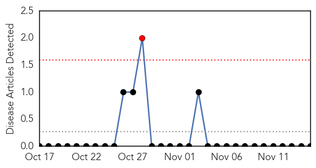
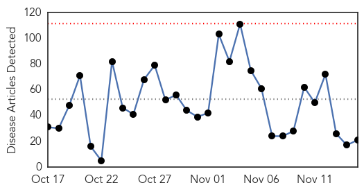
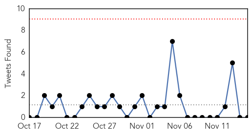
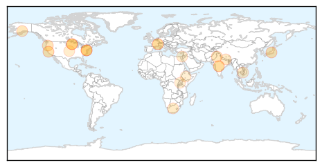
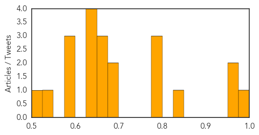

Hemmorhagic Fever
30-Day Web Trend
1 alerts, 0 warnings

30-Day Twitter Trend
0 alerts, 0 warnings

Article Locations

Article Confidences

Top Articles:
-
No articles found for Nov 15, 2015
Top Tweets:
-
No tweets found for Nov 15, 2015
Unknown
30-Day Web Trend
0 alerts, 0 warnings

30-Day Twitter Trend
0 alerts, 0 warnings

Article Locations
Article Confidences
Top Articles:
- 0.978
- Lyme disease in U.S. Is Under-Reported, CDC Says
- 0.966
- New Grapevine Virus Detected in California
- 0.957
- Encephalitis toll goes up to 24 in Gaya
- 0.835
- Chipotle To Reopen Northwest Restaurants This Week
- 0.786
- Drinking Water Shortages Plague Pakistan Region
- 0.786
- Bethel Community Health Fair
- 0.784
- Outside Chipotle Outbreak, Foodborne Illness a Wider Problem
- 0.686
- Chipotle stores to reopen Wednesday
- 0.675
- Pharmacies in capital lack vital drugs
- 0.671
- Coli outbreak in USA linked to burrito outlets spreads
- 0.663
- Drug resistant tuberculosis – health officials' biggest fear
- 0.658
- Rare TB case shows difficulty diagnosing, treating children
- 0.648
- Venues popular with young Parisians targeted in terror attacks
- 0.648
- Video: World shows solidarity with France in wake of attacks
- 0.648
- ‘Terrorism does not stop at borders’, US ambassador tells FRANCE 24
- 0.648
- Democratic rivals slam Clinton for supporting Iraq invasion, ties to Wall Street
- 0.599
- Gaza: infant health jeopardized by shortages in laboratory testing materials - occupied Palestinian territory
- 0.597
- Lyme Rash Reappearance Probably Signals New Infection, Study Says
- 0.577
- Here's why you should think before you have antibiotics
- 0.536
- Why do I suffer from brucellosis?
- 0.514
- #Ethiopia hit by worst drought in decades
Top Tweets:
-
No tweets found for Nov 15, 2015